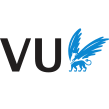

Internships and research positions

Courses and student supervision
I have been a teaching assistant for a couple of courses of the Master program “Artificial Intelligence” at the University of Amsterdam. A short description of each can be found below.
This course teaches the fundamentals of deep learning including backpropagation, initialization and regularization techniques, and optimizing deep neural networks. Furthermore, we discuss common neural network architectures (CNNs, RNNs, GNNs), and generative models (Energy-based, VAE, GANs, Normalizing Flows). I have been responsible for creating and teaching a series of Jupyter notebooks to more than 150 students showing the implementation of the most important models, including their benefits and drawbacks. The notebooks are uploaded on this website, and more details on the course can be found here.
In this research-focused course, we discuss recent advances in the field of Natural Language Processing and Computational Semantics. The topics include multi-task learning and meta-learning, as well as transfer learning from large language models (BERT-family) and multi-lingual tasks. The students work on research projects in groups, of which some can become published as conference papers.
This course teaches the fundamentals of Natural Language Processing, with the second half of the course focusing on RNNs, Attention and applications including machine translation and summarization.
This course focuses on four, often underrated topics in Artificial Intelligence: Fairness, Accountability, Confidentiality and Transparency. The goal of the course is to gain a general understanding of those four topics, and reproduce a published paper/method in one of those four fields.
The course discusses state-of-the-art techniques that constitute the core of information retrieval systems, such as search engines, recommender systems, and conversational agents. It focuses on evaluation, document representation and matching, learning to rank, and user interaction.
For the ASCI PhD course “Computer Vision by Learning, 2022” (website), I have been the Head Teaching Assistant for designing and teaching the practical sessions. The 1-week course covers fundamentals of Computer Vision by using Machine/Deep Learning, but also the recent trends and research in this domain, including Vision Transformer, Group-Equivariant CNNs, and Self-Supervised Learning. For the course, I have created a series of 5 practicals where students get to implement and experiment with these recent trends in Computer Vision, and they are publicly available on this website.
If you are a student looking for a thesis supervisor and working on a similar topic to my research interests, feel free to send me a mail.
Reviewing and presentation
I have been involved in the following conferences:
- Reviewer for: ECCV-2020, ICCV-2021, CausalUAI-2021, ICLR-2022, CVPR-2022, CLeaR-2022, NeurIPS-2022, CRL-2022, CML4Impact-2022, CDS-2022, nCSI-2022, ICLR-2023, CLeaR-2023, TSRL4H-2023, Physics4ML-2023, UAI-2023
- Volunteer for: ICLR-2020, ICML-2020
- Presented work at: NeurIPS-2020, ICLR-2021, ICLR-2022, ICML-2022, UAI-2022